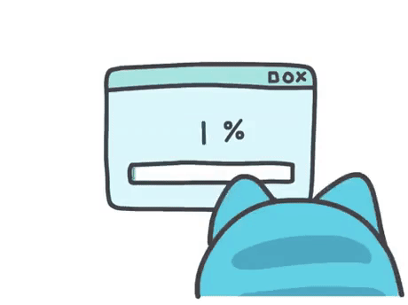

Elementos fundamentais: O que um bom site deve ter?
O que exatamente sua empresa deve incluir no site corporativo? Algumas características podem variar de acordo com a sua persona - isso é, público alvo - e também do setor que a sua empresa está inserida.
Contudo, existe um checklist básico de itens que todos os sites devem conter.
Confira alguns deles:
Uma proposta clara de valor
Conte aos visitantes exatamente o que sua empresa faz de forma clara, demonstrando o valor de seus produtos e serviços.
Isso pode parecer uma dica pouco importante, mas é impressionante a quantidade de sites confusos, que não explicam bem os propósitos de uma empresa ou instituição..
Ademais, a proposta de valor deve ser mais que isso. O hábito dos consumidores mudou e eles estão cada vez mais exigentes e perceptivos, e interessados no valor agregado que o seu produto ou serviço trás para o seu dia a dia deles.
Dessa forma, deixar claro como a sua empresa irá fazer a diferença na vida dos seus clientes contará muitos pontos em seu processo de compra, fazendo com que eles tenham interesse em percorrer o funil de vendas e se tronar seu cliente.
Velocidade de Carregamento

O seu site pode ser o mais bonito e bem desenvolvido frente aos seus concorrentes, mas se ele não carregar rápido, de nada adianta. Um site lento irá rapidamente afastar os visitantes.
Veja alguns números:
- 40% dos visitantes deixam páginas que levam mais de 3 segundos para carregar;
- A cada 1 segundo a mais no carregamento de uma página gera queda de 11% nas visualizações de página e 16% na satisfação dos clientes, de acordo com o Aberdeen Group;
- Segundo a Econsultancy 88% dos usuários que tiveram uma experiência ruim ao acessar um site por conta da velocidade de carregamento são menos propensos a comprar nele e mais 1/3 dessas pessoas vai compartilhar a experiência ruim com amigos.
Há várias razões pelas quais as páginas podem levar muito tempo para serem carregadas:
- Muitos plug-ins instalados em seu site;
- Versão do php desatualizada;
- Provedor de hospedagem;
- Tecnologia ultrapassada que seu site foi desenvolvido;
- Imagens sem otimização;
- Entre outros...
Se você estiver usando um construtor de sites como o WordPress, pode valer a pena obter ajuda de um serviço de otimização de velocidade para tornar seu site mais rápido.
Sites criados a partir do zero geralmente têm menos probabilidade de serem executados lentamente, embora exijam a criação de alguém com conhecimento em programação e desenvolvimento.
Invista na otimização do carregamento do seu site. Pode ter certeza que vai valer a pena!
Navegação intuitiva
O seu site pode ter uma proposta clara de valor, mas se a navegação for confusa, as páginas e conteúdos estiverem perdidos com um menu mau formatado, nada disso adiantará.
O site deve ser amigável para quem o visita. Deixe bem à vista o que ele de fato é importante, não oculte seus serviços e produtos principais ou dificulte o acesso.
A experiência do usuário deve ser sempre levada em consideração na hora de criar o mapa do seu site, sendo um aspectos fundamental, afinal, isso faz parte do convite para que o indivíduo mergulhe na sua web page e descubra todo o conteúdo que você disponibiliza.
Informações de contato e localização
Os visitantes devem conseguir encontrar as informações de contato, como e-mail e telefone, de forma fácil e rápida.
Dedique uma página para isso e deixe essa opção visível logo no menu. Se for o caso, adicione o endereço físico e mapas para o local. Uma boa prática também é incluir essas informações no rodapé
Lembre-se sempre que se os visitantes do seu site acharem dificuldade para entrar em contato com a sua empresa, não pensarão duas vezes em ir na concorrência.
Essa é uma das vantagens da internet para os clientes, a próxima opção está somente a alguns cliques de distância.
Blog para conteúdos informativos
O blog corporativo é o coração de uma boa estratégia de marketing de conteúdo. É lá que você poderá compartilhar os insights, oferecer conteúdo relevante para seus clientes e ajudá-los a progredir na jornada do comprador.
Crie um blog visualmente atrativo e liste-o no menu do website.
Além de ser uma ótima ferramenta para a estratégia de marketing, cada novo post no blog corresponde a uma nova página para o site, aumentando sua visibilidade online e a probabilidade de ser encontrado pelos clientes quando fazem uma busca no Google.
Nesse ponto também podemos falar do SEO (Search Engine Optimization, ou Otimização para mecanismos de busca em português).
Esse é um item de extrema importância para atrair tráfego orgânico para o seu website, isso é, visitantes que não chegam através de anúncios ou redes sociais.
Uma página que trabalha bem o SEO tem uma grande chance de aparecer no topo de sites de pesquisa como Google, Yahoo e Bing.
Isso gera consciência de marca, autoridade no assunto e diversas outras vantagens que deixarão a concorrência para trás.
Depoimentos de Clientes
Uma seção de depoimentos de clientes em seu site, ajuda a ganhar a confiança de seus visitantes, eles funcionam como referência. Simples e extremamente eficiente.
Isso ocorre porque, acima de tudo, as avaliações são a prova de que você tem clientes e, portanto, são um negócio legítimo e não algum tipo de fraude on-line.

As pessoas tendem a confiar em outros consumidores sobre as empresas, e por boas razões.
Os depoimentos de clientes ajudam a dizer para seus visitantes de que eles podem confiar nos seu negócio, além disso eles podem explicar os benefícios de seus produtos ou serviços, e mostram que já tiveram uma boa experiência quando te contrataram.
Ajudam a posicionar sua empresa sob uma perspectiva positiva e respeitável, mas também são eficazes para explicar o quão benéfico pode ser seu produto ou serviço.
Um bom testemunho incluirá qual era a necessidade do cliente e como seu produto ou serviço foi a solução para essa necessidade.
Por exemplo, se você estiver administrando um escritório de advocacia, em um depoimento, um cliente poderá informar como foi ferido em um acidente de carro e precisar de assistência jurídica.
Eles poderiam então explicar como, usando seu conselho jurídico, conseguiram vencer o processo e obter um grande acordo.
Os depoimentos são como críticas positivas de clientes anteriores. Quanto mais testemunhos você tiver, mais seus visitantes assumirão que a sua empresa é confiável.
Os depoimentos podem ajudá-lo a criar uma conexão emocional
É muito mais fácil para os visitantes se conectar com outros clientes do que se conectar com o CEO de uma empresa. Se eles puderem se relacionar com os clientes em seus depoimentos, será mais fácil para eles se relacionarem com sua marca.
Essa conexão emocional pode ser uma ferramenta poderosa quando se trata de converter novos clientes.
Certifique-se de usar os nomes e as fotos dos clientes que fornecem os depoimentos para facilitar ainda mais a conexão dos visitantes com eles em um nível emocional.
Se o seu site em for em wordpress, você pode utilizar plugins que puxam a informação direto do Google My Business, trazendo uma autenticidade ainda maior!
Uma plataforma segura de hospedagem
Ter seu site hackeado, derrubado, ou acesso as suas informações on-line é um pesadelo e, se isso acontecer aos seus negócios, poderá custar caro para sua empresa e para seus clientes.
É imperativo que você tenha uma empresa de hospedagem segura e confiável para manter os bandidos afastados e seu site em pleno funcionamento".

Você deve se certificar se a empresa de hospedagem fornece um bom suporte ativo e se possuem sistemas de backup, caso seu site seja derrubado ou invadido.
Os hackers têm como alvo qualquer site que considerem vulnerável. Eles podem prejudicar a reputação da sua empresa, roubar detalhes particulares ou redirecionar os usuários para obter ganhos financeiros aplicando golpes.
Os visitantes podem saber se o seu site não é seguro e isso provavelmente os fará confiar na sua empresa.
Por exemplo, se você permitir transações através do seu site, verifique se está usando uma plataforma de pagamento segura, como PayPal, PagSeguro, entre outras.
Se você, funcionários ou outros os usuários puderem fazer login no seu site, verifique se o processo de login é seguro e se as senhas não podem ser facilmente adivinhadas (esse ainda é o principal método no qual os hackers tentarão invadir o site).
Vários plug-ins podem ajudar a tornar seu site mais seguro - vale a pena pesquisar sobre eles. Isso inclui firewalls e plug-ins de monitoramento de visitantes.
Também é muito importante manter seu sistema de gerenciamento de conteúdo atualizado para ficar um passo à frente dos hackers".
Conteúdo Direcionado
Mesmo que você tenha um público alvo especifico, este pode ser segmentado em diversos outros subgrupos e cada um desses tem necessidades específicas.
Se você quer que cada um desses nichos se sinta compelido a percorrer o seu funil de compras, você deve responder aos seus anseios e dores individuais.
Mostre que o seu produto ou serviço é bom, que resolve o que eles precisam de fato.
Isso também cria um relacionamento, pois, assim como um amigo próximo, sua empresa sabe o que o cliente necessita e está pronto para satisfazer suas necessidades.
A consequência disso é uma maior interatividade, que pode ser em forma de comentários nos conteúdos do blog ou compartilhamento nas redes sociais.
Imagens Originais e de Alta Qualidade
Lembre-se, cada novo visitante está avaliando os mínimos detalhes de seu website, considerando a possibilidade de realizar ou não uma compra.
O ideal é que você utilize imagens originais, que mostrem a sua empresa, estrutura, colaboradores e que sejam de qualidade.
Sites com imagens de baixa qualidade, muito genéricas passam uma impressão de uma empresa largada, que criou aquele site como obrigação. Sendo assim, estude o que o seu público alvo gosta de ver e invista nessa estética.
Lembre-se também que apesar de contar com qualidade, as imagens não devem ser grandes, isso faz com que o tempo de carregamento das páginas seja longo e quem tem tempo para esperar minutos somente para uma imagem hoje em dia, certo?
Isso também nos leva ao próximo item dessa lista: responsividade.
Site Responsivo
Atualmente, grande parte das pesquisas são feitas diretamente no Smartphone e não existe nada mais irritante do que quando abrimos um site e ele não é otimizado para plataformas mobile.
O conteúdo fica mais difícil de ler e ser encontrado, os textos ficam muito pequenos para leitura e é complicado clicar nos links. Isso faz com que o seu visitante sai rapidamente do seu site, gerando desinteresse.
Um site responsivo faz com que a página se adapte a qualquer tela, seja a de um computador, smartphone ou mesmo de um tablet, contribuindo para a experiência do usuário.
Tenha em mente que grande parte das transações já acontecem em dispositivos móveis (celulares, tablets). Você não vai querer que sua empresa perca vendas e novos clientes porque seu site esta desatualizado tecnicamente. É algo que pode ser resolvido com profissionais capacitados em desenvolvimento de sites.
Conte com uma equipe especializada
Criar um site de qualidade não é uma tarefa trivial. É algo que exige tempo, conhecimento e esforço.
Uma equipe especializada estará preparada para entender o seu negócio e arquitetar um site muito mais eficiente para a sua persona (público alvo).
Não entenda o seu site como um gasto, esse é um item mais que obrigatório para atender as necessidades do mercado consumidor que estamos inseridos atualmente, sendo assim, invista em algo que atraia os seus clientes e gere resultados.
Conclusão
Agora que você conheceu algumas dicas do que compõe um bom site, veja quais são as vantagens de investir tempo e dinheiro na confecção de um:
- Gera maior visibilidade da sua marca;
- É um investimento de baixo custo com alta capacidade de retorno;
- Maior chance de conquistar novos clientes;
- Aumenta a eficiência da sua equipe de marketing;
- Serve como portfólio para todos os seus produtos e serviços;
- Quando combinado com SEO atrai mais clientes;
- É uma forma de seus clientes te encontrarem online;
- Venda de produtos e serviços 24h por dia.
Esses são somente alguns exemplos, a sua página é algo bastante versátil e pode ser amplamente utilizada par gerar os resultados que você deseja.
Você teve a oportunidade de conhecer alguns dos elementos fundamentais do que um bom site deve ter.
Agora que você está por dentro do que um bom site precisa ter, o que você vai fazer pelo site?
Acesse nosso blog e veja mais dicas sobre estratégias de criação de sites e marketing digital.
Até a próxima!